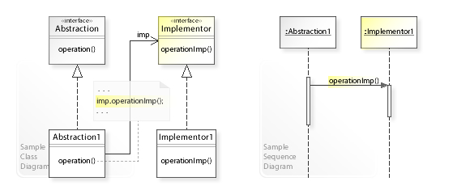
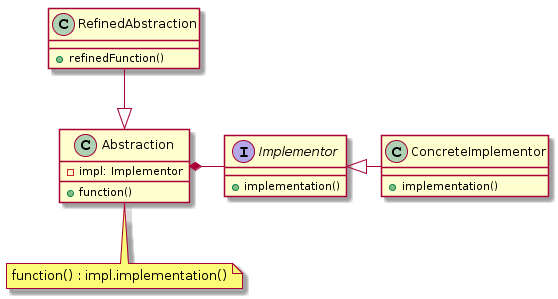
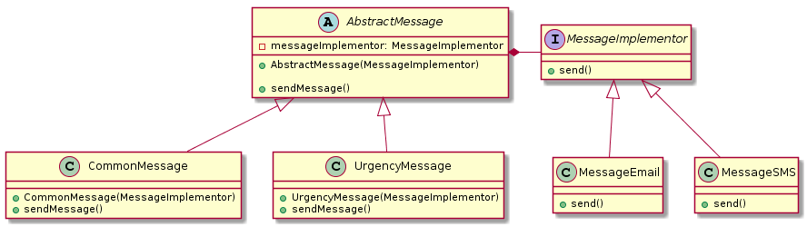

桥接模式(Bridge Pattern)

定义： 将抽象部分与实现部分分离，使他们可以独立的变化。
类型： 结构型模式
UML
1 2 3 4 5 6 7 8 9 10 11 12 13 14 15 16 17 18 19 20 21 22 23 24 25
| @startuml abstract class Abstraction{ - impl: Implementor + function() } class Abstraction note bottom: function() : impl.implementation() interface Implementor{ + implementation() } class RefinedAbstraction{ + refinedFunction() } class ConcreteImplementor{ + implementation() } Abstraction *- Implementor RefinedAbstraction --|> Abstraction Implementor <|- ConcreteImplementor @enduml
|

角色定义
- Abstraction(abstract class)-抽象类： 定义抽象接口，持有/维持 implementor 的引用
- RefinedAbstraction(normal class)-正常的类： 拓展由Abstraction定义的接口
- Implementor(interface)-执行者： 定义执行者的接口
- ConcreteImplementor(normal class)-具体类: 实现Implementor接口
Bridge设计模式可以解决哪些问题？
- 抽象及其实现应该彼此独立地定义和扩展。
- 避免抽象及其实现之间的编译时绑定，以便可以在运行时选择实现。
使用子类时，不同的子类以不同的方式实现抽象类。但是实现在编译时绑定到抽象，并且不能在运行时更改。
桥接模式实例一
模拟账号操作记录日志
Implementor(Logger.java)
1 2 3 4 5 6 7 8 9 10 11 12 13 14 15 16 17 18 19 20 21 22 23 24 25
| @FunctionalInterface public interface Logger { * 打印日志 * @param message message */ void log(String message); * info级别日志 * @return LOGGER */ static Logger info(){ return message -> System.out.println("info: " + message); } * warn级别日志 * @return LOGGER */ static Logger warning(){ return message -> System.out.println("warning: " + message); } }
|
Abstraction(AbstractAccount.java)
1 2 3 4 5 6 7 8 9 10 11 12 13 14 15 16 17 18 19 20 21 22
| public class AbstractAccount { private Logger logger = Logger.info(); * 设置打印的日志 * @param logger Logger */ public void setLogger(Logger logger) { this.logger = logger; } * 操作记录 * @param message 信息 * @param action 结果 */ protected void operate(String message, BooleanSupplier action) { boolean result = action.getAsBoolean(); logger.log(message + " result " + result); } }
|
RefinedAbstraction(SimpleAccount.java)
1 2 3 4 5 6 7 8 9 10 11 12 13 14 15 16 17 18 19 20 21 22 23 24 25 26 27 28 29 30 31 32 33 34 35 36 37 38 39 40 41 42
| public class SimpleAccount extends AbstractAccount { * 余额 */ private int balance; * 初始化账号余额 * * @param balance balance */ public SimpleAccount(int balance) { this.balance = balance; } * 判断是否快余额不足 * 判断条件为小于50 * * @return boolean */ public boolean isBalanceLow() { return this.balance < 50; } * 取出余额 * * @param amount 数量 */ public void withdraw(int amount) { operate("withdraw " + amount, () -> { if (this.balance >= amount) { this.balance -= amount; return true; } return false; }); } }
|
Client
1 2 3 4 5 6 7 8 9 10 11 12 13 14 15 16 17 18 19 20 21 22 23
| public class BridgeDemo { public static void main(String[] args) { SimpleAccount account = new SimpleAccount(100); account.withdraw(75); if (account.isBalanceLow()){ account.setLogger(Logger.warning()); } account.withdraw(10); account.withdraw(100); } }
|
桥接模式实例二
模拟消息的发送
UML
1 2 3 4 5 6 7 8 9 10 11 12 13 14 15 16 17 18 19 20 21 22 23 24 25 26 27 28 29 30 31 32 33 34 35 36 37 38 39
| @startuml interface MessageImplementor{ + send() } class MessageEmail{ + send() } class MessageSMS{ + send() } abstract class AbstractMessage{ - messageImplementor: MessageImplementor + AbstractMessage(MessageImplementor) + sendMessage() } class CommonMessage{ + CommonMessage(MessageImplementor) + sendMessage() } class UrgencyMessage{ + UrgencyMessage(MessageImplementor) + sendMessage() } MessageImplementor <|-- MessageEmail MessageImplementor <|-- MessageSMS AbstractMessage *- MessageImplementor AbstractMessage <|-- CommonMessage AbstractMessage <|-- UrgencyMessage @enduml
|

Implementor接口
1 2 3 4 5 6 7 8 9
| public interface MessageImplementor { * 发送消息 * @param message 消息 * @param to 发送对象 */ void send(String message, String to); }
|
ConcreteImplementor具体实现
1 2 3 4 5 6 7 8 9 10 11 12 13
| public class MessageEmail implements MessageImplementor{ @Override public void send(String message, String to) { System.out.println(String.format("发送邮件消息 {%s} to {%s}", message, to)); } } public class MessageSMS implements MessageImplementor { @Override public void send(String message, String to) { System.out.println(String.format("发送短信消息 {%s} to {%s}", message, to)); } }
|
Abstraction
1 2 3 4 5 6 7 8 9 10 11 12 13 14 15 16 17 18 19 20 21
| public abstract class AbstractMessage { MessageImplementor messageImplementor; * 初始化时传入具体实现 * @param messageImplementor 消息发送 */ public AbstractMessage(MessageImplementor messageImplementor) { this.messageImplementor = messageImplementor; } * 发送消息，委派给MessageImplementor的具体实现 * @param message 消息 * @param to 发送对象 */ public void sendMessage(String message,String to){ this.messageImplementor.send(message,to); } }
|
RefinedAbstraction
1 2 3 4 5 6 7 8 9 10 11 12 13 14 15 16 17 18 19 20 21 22 23 24 25 26 27 28 29 30 31 32 33 34 35 36 37 38 39 40 41 42 43 44 45
| public class CommonMessage extends AbstractMessage{ * 初始化时传入具体实现 * * @param messageImplementor 消息发送 */ public CommonMessage(MessageImplementor messageImplementor) { super(messageImplementor); } @Override public void sendMessage(String message, String to) { super.sendMessage(message, to); } } public class UrgencyMessage extends AbstractMessage { * 初始化时传入具体实现 * * @param messageImplementor 消息发送 */ public UrgencyMessage(MessageImplementor messageImplementor) { super(messageImplementor); } @Override public void sendMessage(String message, String to) { message = "[加急] " + message; super.sendMessage(message, to); } * 拓展自己功能，获取某个消息的状态 * @param messageId messageId * @return Object */ public Object call(String messageId){ return null; } }
|
Client
1 2 3 4 5 6 7 8 9 10 11 12 13
| public class Client { public static void main(String[] args) { MessageImplementor sms = new MessageSMS(); AbstractMessage messageSMS = new CommonMessage(sms); messageSMS.sendMessage("test","sam"); MessageImplementor email = new MessageEmail(); AbstractMessage messageEmail = new UrgencyMessage(email); messageEmail.sendMessage("test","sam"); } }
|
桥接模式的优缺点
优点：
桥接模式将继承关系转化成关联关系，它降低了类与类之间的耦合度
JVM的平台无关性其实也运用了桥接模式
在Java的JDBC驱动器中就应用了桥接模式。
一个应用系统动态的选择一个合适的驱动器，然后通过驱动器向数据库引擎发出指令。这个过程就是将抽象角色的行为委派给实现角色的过程。
缺点：
- 桥接模式的引入会增加系统的理解与设计难度，由于聚合关联关系建立在抽象层，要求开发者针对抽象进行设计与编程。
- 桥接模式要求正确识别出系统中两个独立变化的维度，因此其使用范围具有一定的局限性。